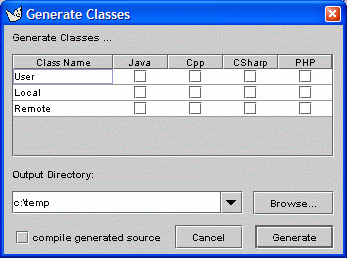

ArgoUML's Code Generation Window is displayed when you give a command to generate code files. The table in the upper part of the window lists the classes that will be generated. You can check or uncheck each class to refine the set of classes that will be generated. The text field allows you to specify the output directory where the new class files will be stored.
Back to ArgoUML Tours
Back to ArgoUML Home